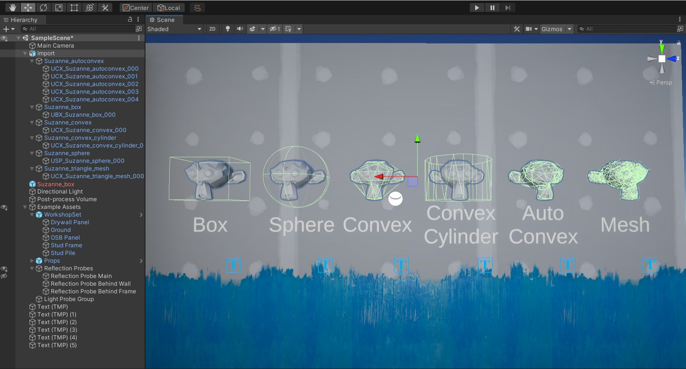
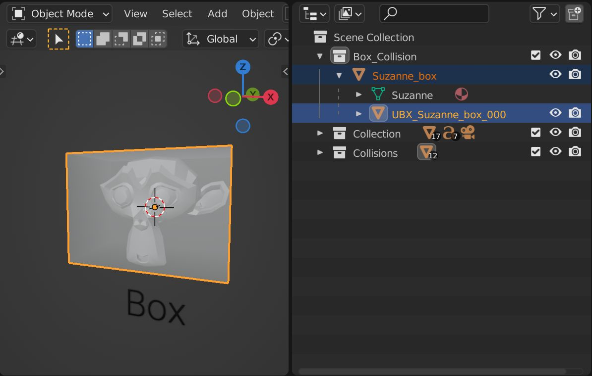
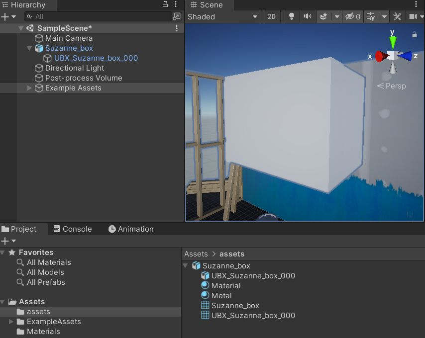
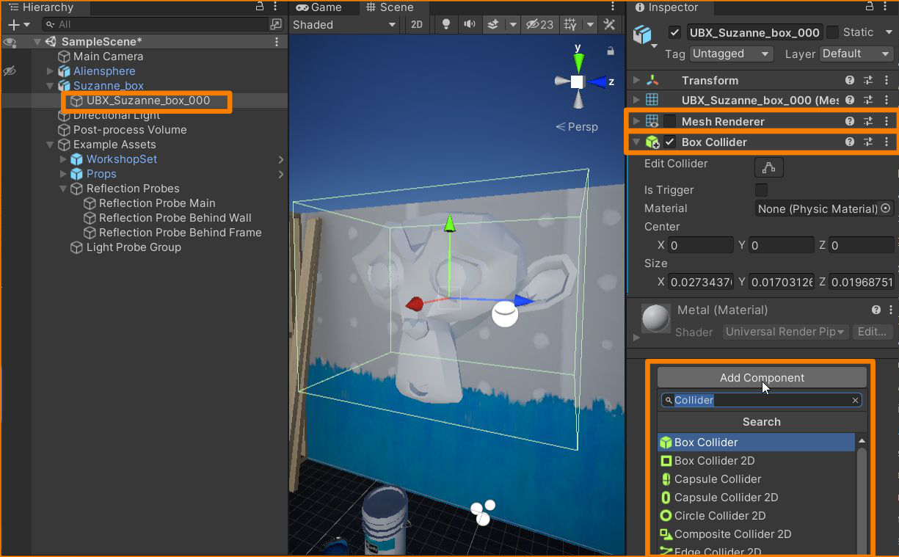
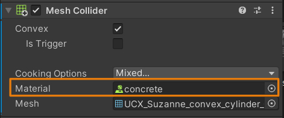
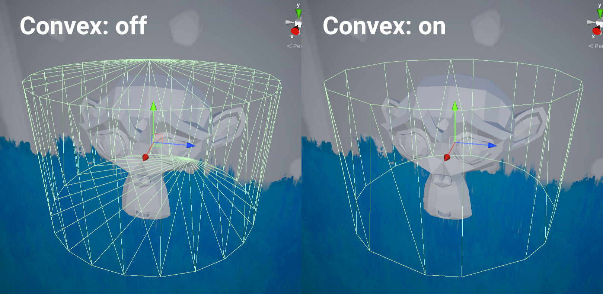

The collider import and setup in Unity is very simple. The following documentation is a guide on how to get the collisions from Blender to Unity. It will also reference the well-written Unity documentation, for more information on the Physics system in Unity and how the colliders are used by it.

Overview
You can find detailed information on the collision setup in Unity in their documentation.
Unity supports the following Collider shapes relevant to this addon:
- Unity Documentation: Box Collider
- Unity Documentation: Sphere Collider
- Unity Documentation: Mesh Collider
Note
Convex Colliders are also handled by the Mesh Collider Component. The Mesh Collider has a checkbox to select convex shapes. Convex Mesh Colliders are limited to 255 triangles.
Setup
-
There are no setup requirements or naming guidelines for exporting colliders to Unity. you can set them up according to your project guidelines or preferences.

-
Export the asset as fbx, together with all its colliders.
- Import the asset to Unity. You can use the same export/import settings as usual.
-
Drag the asset into the scene. The colliders are visible.

-
Disable Mesh Renderer for all colliders meshes. Select the colliders from Hierarchy, go to the Inspector and remove the checkbox from the Mesh Renderer
-
Add Collider Component to the collider mesh. Go to the Inspector -> Add Component -> Box Collider (or whatever collider type you have)

-
(optional) Is it a dynamic object? If so, add Rigidbody component to the asset parent. To do so, go to Inspector -> Add Component -> Rigidbody

-
(optional) The collider component has a Physics Matreial input Material that can be used to assign Physics materials to collisons. See: Unity Documentation: Physic Material for more information on physics materials.

Other

Warning
It appears that Unity is optimizing all the Convex Mesh Collider geometry even if the triangle max of 255 is not reached. See example above.
The following image shows an example with more complexity. Only the parent contains a Rigidbody component. All colliders in the hierarchy below will function as 1 compound collider. Unity supports multi-edit for all selected entities. You can easily disable Mesh Renderer for all colliders at once and assign the correct collider type based on the naming. In this case, consistent naming comes in handy.